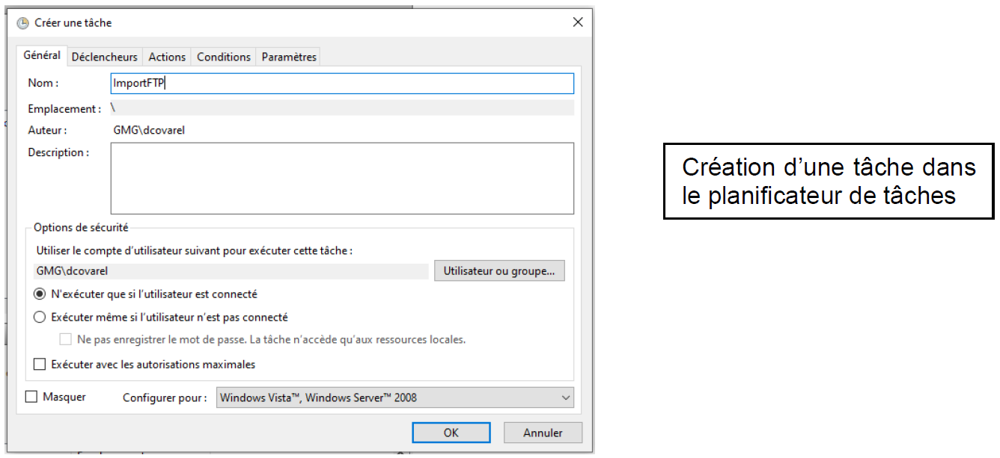

Ma première mission avait pour but de me familiarisé avec un tout nouveau langage pour moi, le Visual Basic Application (VBA).
Pour cette mission mon objectif était de réaliser quelques modifications automatiques sur la page finale d'un rapport d'audit de cybersécurité.
Développement d’une application interne à l’entreprise servant à compresser automatiquement les connecteurs réseaux inutiles des collaborateurs.
Application presque devenue indispensable pour une grosse organisation comme My-MG à La Ravoire, qui comptabilise plus de 400 collaborateurs, sans compter les nombreux stagiaires.
Le but de l’application est donc de gagner et/ou d’économiser de l’espace de stockage.
Objectif : Réaliser un programme capable d’importer des fichiers provenant d’un serveur FTP.
Executable automatisé par un programme batch.
Utilisation du plannificateur de tâches.
